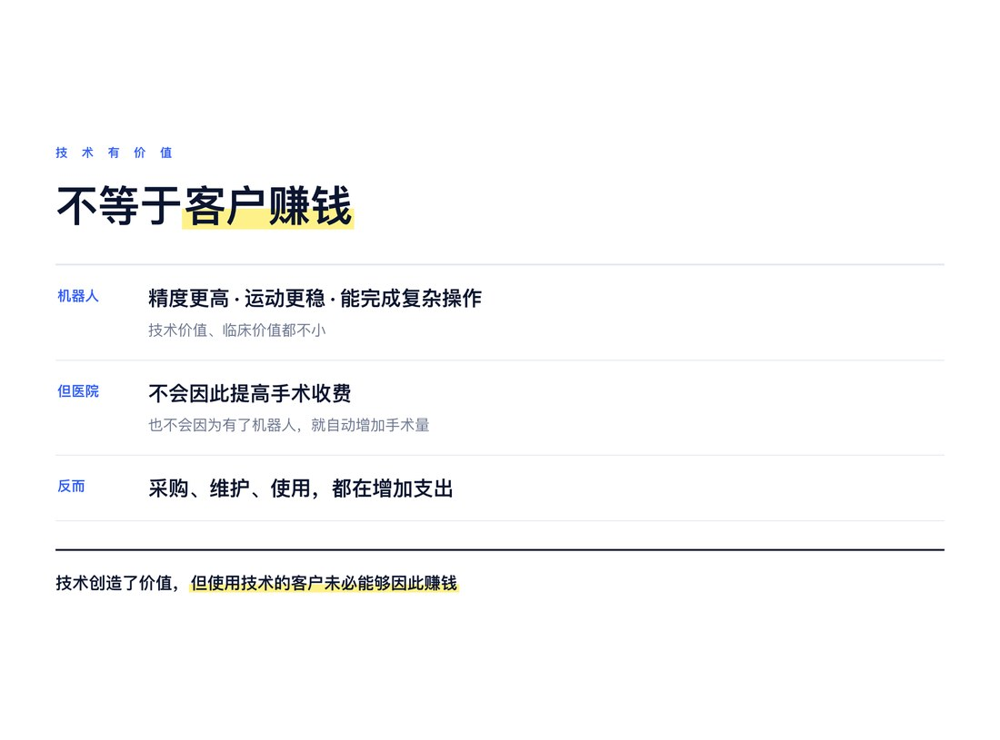
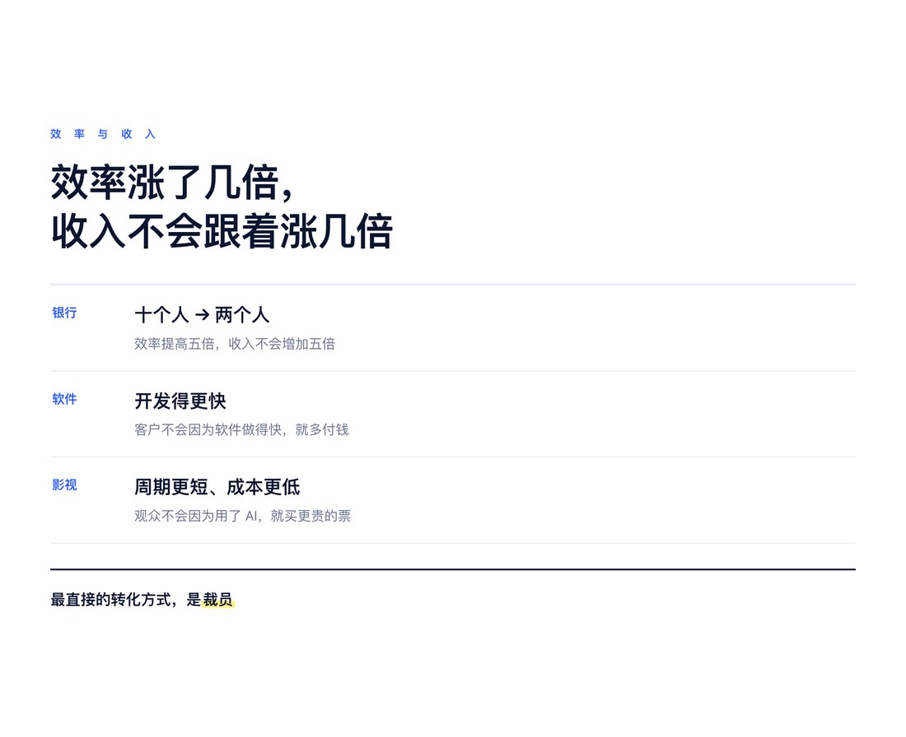
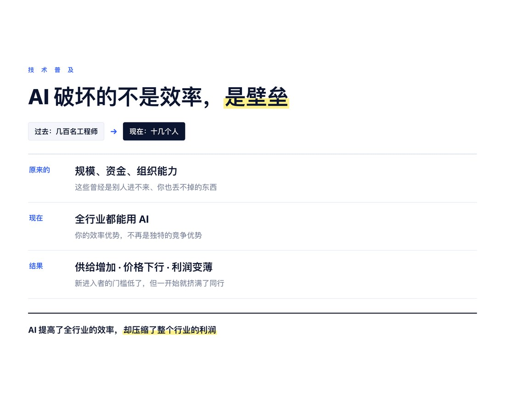
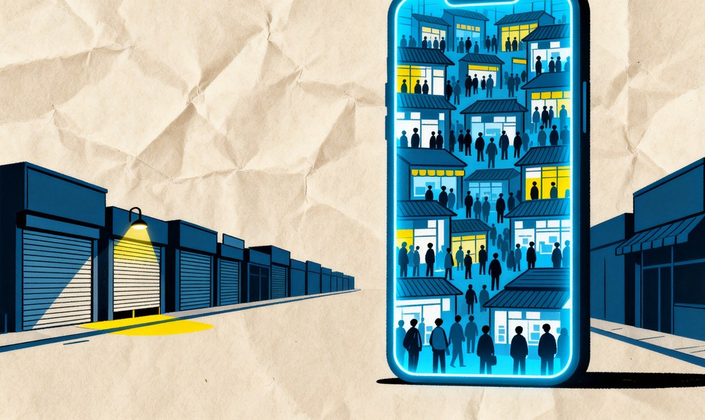
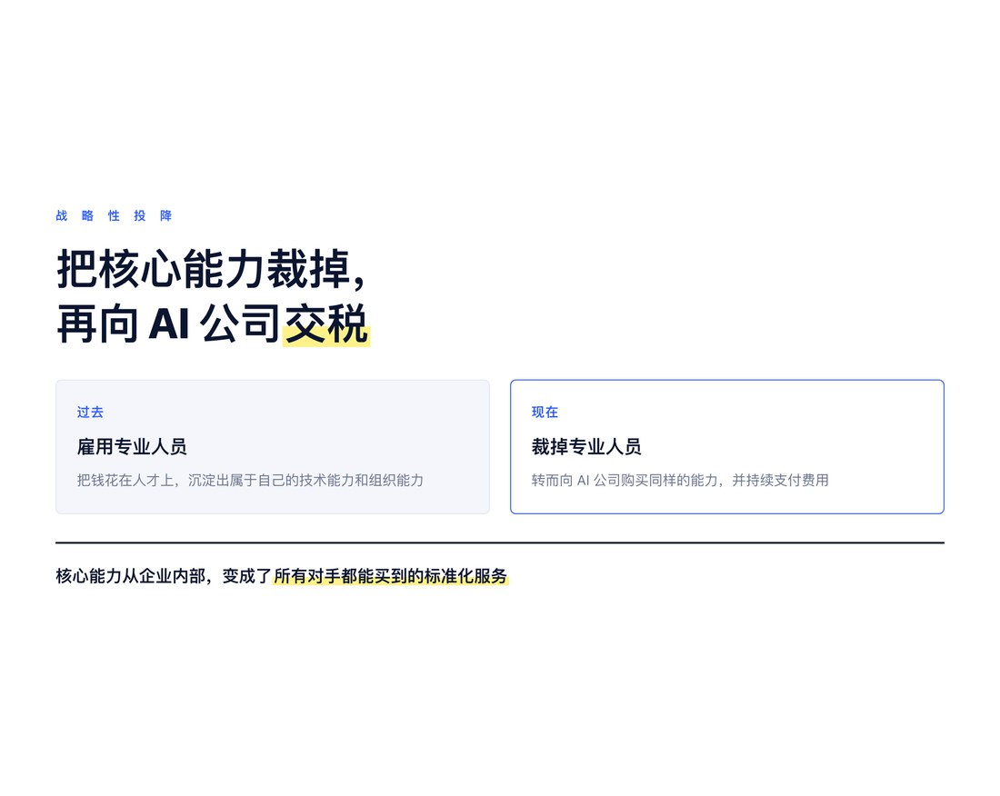
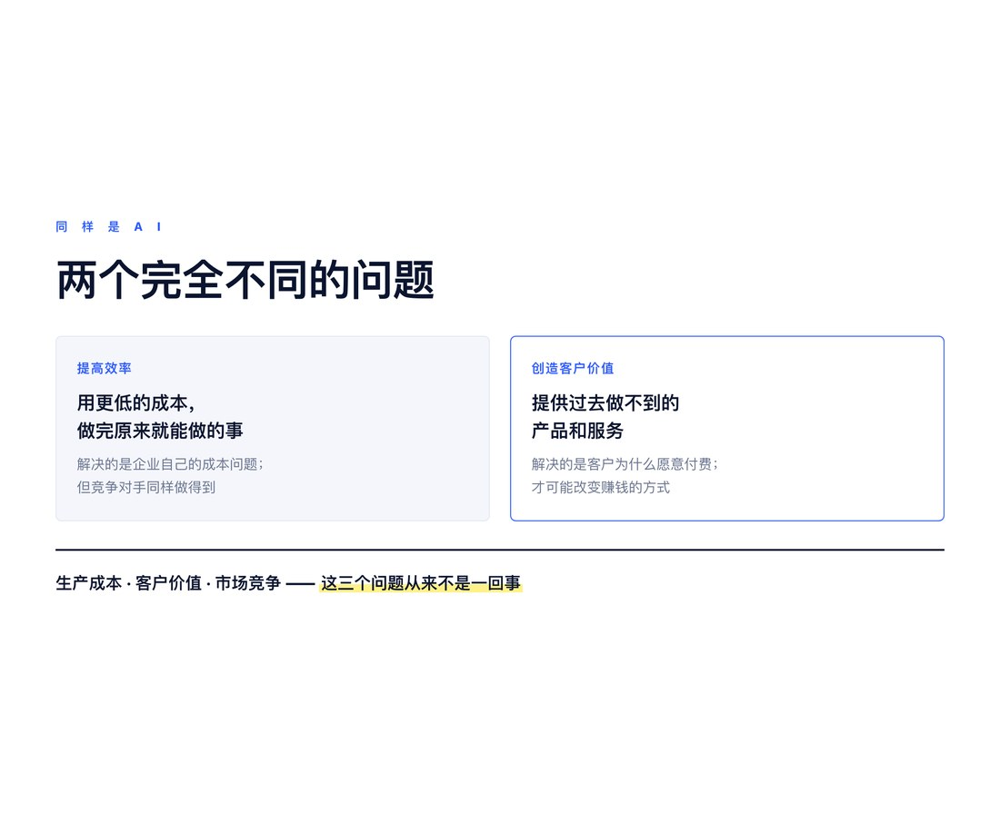

AI 的出现，带来的生产效率提升是惊人的。
过去需要几十个人、几个月完成的工作，现在可能只需要几个人、几天时间。无论是软件开发、内容创作，还是金融分析、企业管理，AI 都在以惊人的速度改变传统的生产方式。
但我一直觉得，AI 的技术价值与 AI 的商业价值，可能是两回事。
这里，我并不是讨论大模型、GPU、芯片等 AI 产业链上的公司。它们有自己的商业逻辑，也有自己的商业化问题。
我想讨论的是那些大量使用 AI 的传统企业，比如银行、软件公司、影视制作公司，以及其他正在积极推动 AI 转型的企业。
对于这些企业而言，AI 究竟意味着什么？
今天几乎所有企业都在研究如何使用 AI，提高效率、降低成本。但很少有人认真思考另一个问题：
AI 虽然很好，但使用 AI 的客户，真的能因此赚到更多的钱吗？
● ● ●
一、技术价值不等于商业价值
这个问题让我想到手术机器人。
相比人工手术，机器人手术有很多技术优势，例如更高的操作精度、更稳定的运动控制，以及完成某些复杂操作的能力。
但对于医院来说，购买一台手术机器人，并不意味着能够获得更多收入。
医院并不会因为使用了机器人，就一定能够提高手术收费，也不会因为有了机器人，就自动增加手术量。
相反，机器人的采购、维护和使用，还可能增加医院的支出。
所以，手术机器人虽然有技术价值，甚至有很大的临床价值，但这并不意味着它能够为医院带来直接的经济收益。

技术创造了价值，但使用技术的客户未必能够因此赚钱。
我觉得，今天 AI 的商业化，也面临着类似的问题。
一家银行使用 AI，原来需要十个人完成的工作，现在可能只需要两个人。但是，银行并不会因为工作效率提高了五倍，收入就增加五倍。
一家软件公司使用 AI，程序员的开发效率提高了几倍，但客户并不会因为软件开发得更快，就愿意为同样的软件支付更高的价格。
一家影视公司使用 AI，可能大幅缩短制作周期、降低制作成本，但观众也不会因为电影使用了 AI 制作，就愿意支付更高的票价。

AI 确实帮助企业节约了大量时间。
但是，节约时间与增加收入，是完全不同的两件事。
如果企业的业务量没有增加，产品价格没有提高，客户也没有获得新的价值，那么 AI 带来的效率提升，究竟如何转化为企业的利润？
一种最直接的方法，就是裁员。
原来需要十个人，现在只需要两个人。通过减少八个人的工资支出，企业才能把效率提升转化为成本节约。
但是，如果企业没有减少员工，也没有增加业务量，那么节约出来的时间，可能并不会变成真正的经济收益。
更何况，企业还需要为 AI 支付额外的费用。
这就出现了一个很奇怪的现象：
AI 让员工的工作效率越来越高，却未必让企业赚到更多的钱。
当然，降低成本也可以增加利润。但是，这种利润增加有一个前提：企业能够保留这些成本节约带来的收益。
而在市场竞争中，这个前提未必成立。
● ● ●
二、技术普及可能摧毁企业原有的竞争壁垒
假设一家软件公司使用 AI，将原来的开发成本降低了80%。
这当然是巨大的技术进步。
但问题是，它的竞争对手也可以使用 AI。
当整个行业都能够使用 AI，大幅降低生产成本时，原来属于一家企业的效率优势，就不再是独特的竞争优势。
生产成本降低了，市场竞争却可能更加激烈。
因为 AI 不仅降低了原有企业的生产成本，也降低了新企业进入市场的门槛。
过去需要几百名工程师才能开发的软件，现在可能只需要十几个人。
过去需要庞大制作团队才能完成的影视作品，现在可能只需要一个小团队。
过去需要大量专业人员、资金和组织能力才能完成的工作，现在越来越多地可以由小企业甚至个人完成。
这意味着，很多传统企业原来依靠人员规模、资金投入和组织能力建立的竞争壁垒，正在被 AI 削弱。

影视行业就是一个很典型的例子。
过去，制作一部高质量的电影、动画或者电视剧，需要大量专业人员、昂贵的设备和复杂的制作流程。
现在，AI 正在大幅降低图像、视频、音乐和特效的制作成本。
大量小企业甚至个人创作者，开始能够以极低的成本完成过去只有大企业才能完成的工作。
从技术进步的角度看，这是好事。
但从商业竞争的角度看，它可能是一场灾难。
AI 一方面可能摧毁大企业原有的规模优势，另一方面也可能将大量小企业压缩在狭小的利润空间里。
因为，当所有人都能够以极低的成本生产同样的产品时，产品供给就会迅速增加，竞争也会更加激烈。
大企业失去了原来的壁垒。
小企业虽然获得了进入市场的机会，却也不得不面对大量同样低成本的竞争者。
最终，整个行业的生产效率大幅提高，产品价格却可能不断下降，企业的利润空间反而越来越小。
消费者获得了更多、更便宜的产品，但企业未必因此获得更多利润。
我觉得，这可能是未来很多传统行业在 AI 发展下的共同趋势。
它让我想到当年电商对实体店的冲击。
电商出现之后，大幅降低了商品销售的部分经营成本，也降低了许多商家进入市场的门槛。
传统实体店原来依靠地理位置、店面规模和本地客流建立的竞争优势，开始受到冲击。
大量小商家能够通过电商平台进入市场。
但这并不意味着小商家就更容易赚钱。
相反，当大量商家在同一个平台竞争，商品价格变得高度透明，竞争可能更加激烈。
实体店原来支付房租，现在可能需要支付平台佣金、流量费用和广告费。
经营成本的结构改变了，但利润未必增加。
更重要的是，实体店即使完成了所谓的电商转型，也不一定能够恢复原来的竞争优势。
因为当它进入电商平台时，就必须面对一个竞争更加充分、价格更加透明的市场。

今天，AI 正在让许多传统企业，感受到当年实体店被电商冲击的滋味。
企业如果不使用 AI，可能因为成本和效率落后而失去竞争力。
但企业即使积极使用 AI，也未必能够获得新的竞争优势。
因为它的竞争对手同样可以使用 AI。
从这个意义上讲，AI 对传统企业的冲击，可能不仅仅是一次生产技术的升级，而是一次行业竞争结构的重组。
对于一家企业来说，AI 是生产力。
但对于整个行业来说，AI 可能成为原有竞争壁垒的破坏者。
过去，一家企业拥有更多员工、更大的组织和更高的生产能力，往往意味着更强的竞争力。
但当这些生产能力可以通过 AI 低成本获得时，企业原来依靠规模建立的优势，就可能迅速失去价值。
而且，企业的效率提高，并不意味着企业能够保留效率提高带来的利润。
当所有竞争者都降低了成本，市场竞争可能迫使企业降低价格。
最后，AI 创造的经济价值，可能更多地转移给消费者，或者被 AI 技术供应商获取。
生产产品的企业，却未必能够获得更多利润。
这就是我认为 AI 商业化面临的一个根本问题：
AI 提高了整个社会的生产效率，却未必提高使用 AI 的企业的盈利能力。
● ● ●
三、传统企业的 AI 转型，可能是一种战略性投降
现在，几乎所有传统企业都在谈 AI 转型。
银行要 AI 转型，软件公司要 AI 转型，影视公司要 AI 转型。
大家讨论最多的，是如何利用 AI 提高效率、减少员工、降低成本。
但是，我觉得，这种所谓的 AI 转型，可能本身就是一个伪命题。
如果一家企业的 AI 转型，只是把原来的核心人员裁掉，把原来依靠自己组织完成的工作交给 AI，那么这种转型，其实更像是一种投降。
因为企业原来依靠专业人才、组织能力和长期积累的经验，建立了自己的竞争壁垒。
现在，它通过购买 AI 服务，把这些能力变成了所有竞争对手都能够购买的标准化服务。
表面上，企业降低了成本。
实际上，它可能同时放弃了自己原有的竞争优势。
而且，企业还需要持续向 AI 公司支付费用。
过去，企业花钱雇用专业人员，形成自己的技术能力和组织能力。
现在，企业把专业人员裁掉，转而向 AI 公司购买相同的能力。
原来属于企业内部的核心能力，逐渐变成了外部供应商提供的服务。
这种变化，当然可能降低成本。
但它也可能让企业越来越依赖 AI 供应商，而自身越来越缺乏差异化的竞争能力。

最后，所谓的 AI 转型，可能只是把自己的核心能力裁掉，然后向 AI 公司交税。
这与当年实体店进入电商平台，又有什么根本区别呢？
当然，并不是所有的 AI 转型都会导致这样的结果。企业也可以利用 AI 增强自身的专业能力，形成新的竞争壁垒。
但关键在于，企业究竟应该如何使用 AI？
今天，大多数企业思考的是：
如何用 AI 减少员工？
如何用 AI 降低生产成本？
如何用 AI 更快地完成原来的工作？
这些问题当然重要，但我认为，它们并不是传统企业在 AI 时代生存的根本问题。
因为，如果 AI 能够帮助你降低成本，它同样能够帮助你的竞争对手降低成本。
如果 AI 能够帮助你减少员工，它同样能够帮助一家新成立的小企业，以极低的成本进入你的市场。
所以，企业真正需要思考的，不是如何使用 AI 更便宜地完成原来的工作。
而是如何利用 AI，创造新的商业价值。
● ● ●
四、真正的 AI 转型，是利用 AI 创造新的客户价值
所以，在我看来，传统企业的 AI 转型，最重要的可能不是利用 AI 提高生产效率，而是利用 AI，为自己的客户创造新的价值。
这两者有着根本的区别。
提高生产效率，是用更低的成本完成原来已经能够完成的工作。它解决的是企业自身的成本问题。
创造新的客户价值，则是利用 AI 提供过去无法提供的产品和服务，解决过去无法解决的客户问题。它解决的是客户为什么愿意付费的问题。
对于一家企业来说，前者当然重要，但它往往很难形成持久的竞争优势。因为你的竞争对手同样可以使用 AI，获得类似的效率提升。
而后者则可能帮助企业开拓新的市场、创造新的收入，甚至建立新的商业模式。

比如，一家银行利用 AI 减少信贷审核人员，是提高效率。但如果利用 AI，让过去无法获得专业金融服务的小微企业和个人，也能够获得低成本、个性化的金融服务，那就是创造了新的客户价值。
一家软件公司利用 AI 减少程序员，是提高效率。但如果利用 AI，让过去因为成本过高而无法实现的软件功能和服务成为可能，那就可能创造新的市场。
一家医院利用 AI 减少医生的文书工作，是提高效率。但如果利用 AI，让原来只有少数专家才能提供的医疗服务，能够以更低的成本服务更多患者，那就可能创造新的医疗价值。
这也让我重新思考，什么才是真正的 AI 商业化。
过去，我们习惯于从生产的角度理解技术进步：技术越先进，生产效率越高，成本越低，企业就越有竞争力。
但当 AI 成为一种所有企业都可以获得的通用技术时，这种逻辑可能不再成立。
企业使用 AI 的能力，可能越来越不重要；企业知道如何利用 AI 为客户创造价值的能力，反而越来越重要。
这意味着，传统企业需要重新思考自己的商业模式，而不仅仅是重新设计工作流程。
它需要思考的，不是原来需要十个人的工作，现在能不能只用两个人完成。
而是原来十个人无法完成的客户需求，现在能不能通过 AI 得到满足。
不是原来的产品能不能以更低的成本生产。
而是原来无法提供的产品和服务，现在能不能成为新的生意。
AI 提高效率，只是改变了企业生产价值的方式；AI 创造新的客户价值，才可能改变企业赚钱的方式。
如果一家传统企业只把 AI 当作降低成本的工具，那么它最终可能只是被迫参与一场所有竞争者都无法回避的效率竞赛。
但如果它能够利用 AI，发现新的客户需求，提供新的产品和服务，那么 AI 就可能成为它建立新竞争优势的机会。
因此，我认为传统企业真正的 AI 转型，不应该从“哪些工作可以被 AI 替代”开始，而应该从另一个问题开始：
有了 AI，我们现在能够为客户做什么过去做不到的事情？
这才是我理解的 AI 转型。
它不是一次简单的技术升级，也不只是一场降低成本的组织变革，而是一次重新定义客户价值与商业模式的机会。
传统企业能否在 AI 时代活下来，关键可能不在于它能用 AI 替代多少员工，而在于它能用 AI 创造多少新的、客户愿意付费的价值。
AI 创造的价值，究竟会被谁拿走？
可能是消费者，可能是 AI 技术供应商，也可能是那些能够利用 AI 创造独特客户价值的企业。
但未必是那些使用 AI 最多、裁员最多、提高效率最快的企业。
因此，对于传统企业来说，真正决定未来能否活下来的，不是学会如何使用 AI 提高效率，而是能否利用 AI，为自己的客户创造新的价值。
因为，生产效率决定你能够以多低的成本生产，客户价值决定别人愿意为你的产品支付多少钱，而市场竞争决定你最终能够留下多少利润。
这三个问题，从来就不是一回事。
AI 可以帮助企业解决第一个问题。
但企业能否解决后两个问题，才真正决定了 AI 商业化的成败。
如果 AI 只是帮助企业更便宜地完成原来的工作，那么所谓的 AI 转型，可能只是一次被迫的成本竞争，甚至是一种投降。
只有当 AI 帮助企业为客户创造新的价值时，AI 才可能成为企业真正的商业机会。